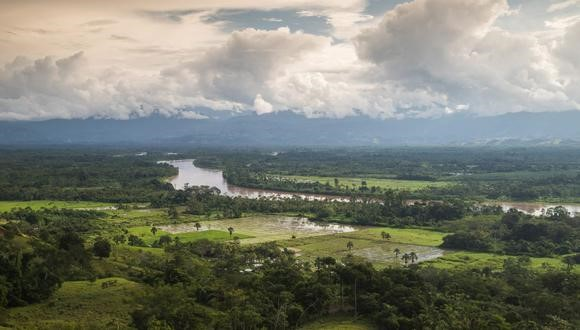
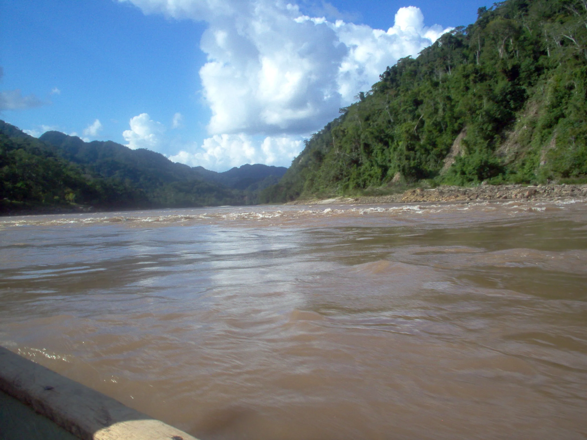
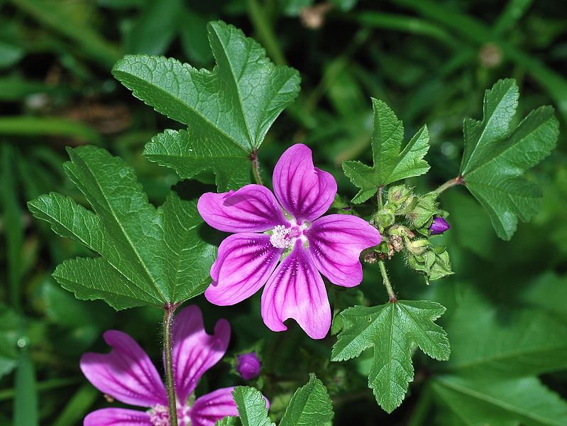
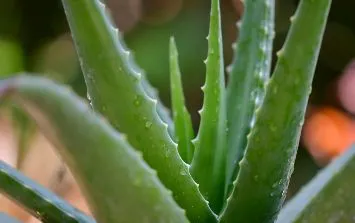
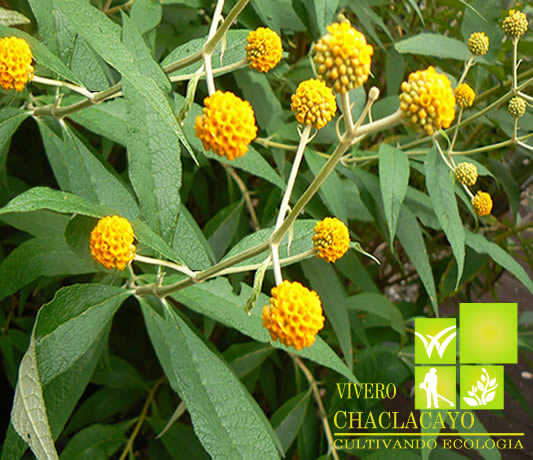
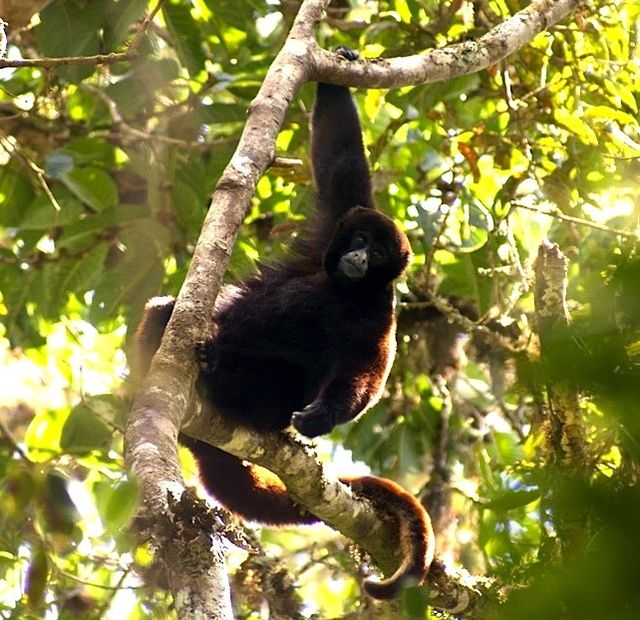
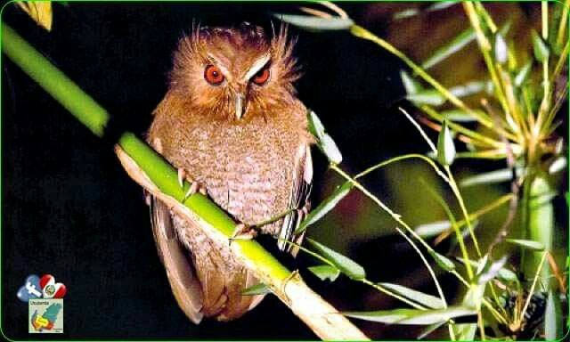
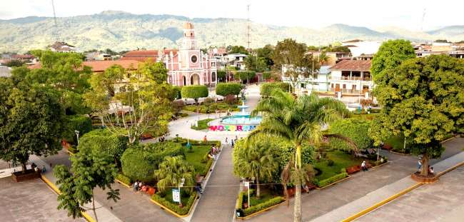
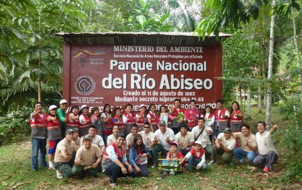
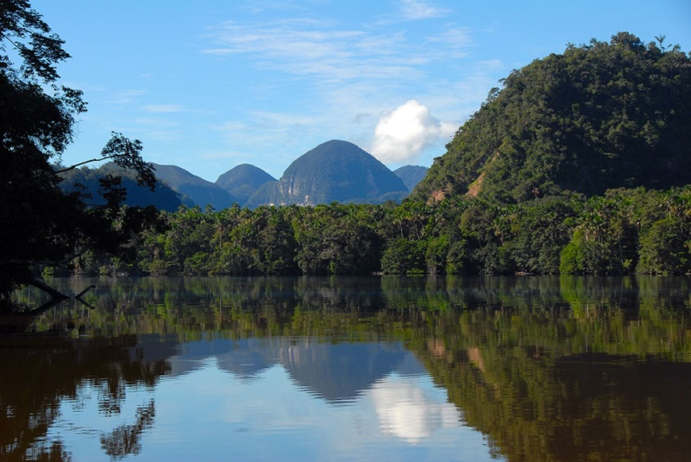

Introduccion
San Martín es una región ubicada en el noreste de Perú, limitando con Ecuador y Brasil. Su geografía está marcada por una diversidad de paisajes que van desde la selva amazónica hasta los Andes, lo que le otorga una gran riqueza natural y cultural. En San Martín podemos encontrar una gran cantidad de ríos, como el Huallaga y el Mayo, que atraviesan la región y la convierten en una tierra fértil y productiva. Además, cuenta con una gran variedad de fauna y flora, siendo hogar de especies en peligro de extinción como el jaguar y el oso de anteojos. En cuanto a su relieve, San Martín cuenta con montañas de gran altitud en la cordillera de los Andes, pero también con extensas llanuras en la selva baja. La región se caracteriza por tener un clima cálido y húmedo, ideal para el desarrollo de la flora y fauna.
Localización

- El departamento de San Martín limita con:
- Loreto y Amazonas por el norte.
- Ancash y Huánuco por el sur.
- Cajamarca y La Libertad por el oeste.
- Ucayali y Loreto por el este.
- Tocache
- Bellavista
- Mariscal Cáceres
- Picota
- Huallaga
- El dorado
- San Martín
- Moyobamba
- Rioja
Recursos Naturales
San martin tiene varios recursos naturales, por ejemplo:
- Los bosques tropicales: Incluyen árboles, plantas y animales.
- Biodiversidad: San Martín destaca por su gran variedad de flora y fauna.
- Agricultura: En San Martin se cultiva una gran variedad de productos como el cafe, el cacao o la piña.
- Minerales: Se encuentran minerales como el oro, la plata, el cobre y el hierro.
Clima
San Martin es caracterizado por sus climas subtropicales y tropicales, se divide en dos estaciones, seca de junio a septiembre y la otra lluviosa, de octubre a mayo. Su temperatura suele estar 23ºC y 27ºC y la precipitación pluvial media anual es de 1 500 mm.
El sistema hidrográfico, se ubica por los ríos de la cuenca amazónica, convirtiéndose en el río del departamento, el Huallaga; también cuenta con lagunas, estas no son muy profundas, pero tienen una alta temperatura y su forma es semicircular.
Flora y Fauna
San martín posee varias especies de flores y plantas. Estas se dividen en medicinales y oriundas: Las plantas medicinales crecen específicamente en la selva del Perú, se cree que tienen propiedades sorprendentes y que pueden curar cualquier síntoma o mal que posea la persona. Por ejemplo:
- Malva: Sirve para aliviar los riñones y descongestionar la nariz, en general ayuda a combatir enfermedades respiratorias. 
- Sabila: Esta planta se usa como un liquido para suavizar la piel, tambien sirve para desinflamar heridas o golpes. 
- Matico: Crece principalmente en la selva alta y sirve para curar la bronquitis e infecciones. 
- Mono choro: Esta especie es una de las mas afectadas y con mayor riesgo a desaparecer, debido a la deforestación y destrucción de su hábitat. 
- Lechuza bigotona: Esta especie también está en peligro de axtinción debido a su captura y deforestación de su hábitat. 
Relaciones del hombre con su medio
El estilo de vida en el departamento es tranquilo y conectado a la naturaleza, estos suelen trabajar en viñedos u olivares. con la agricultura, en la producción de vino y aceite de oliva, dependiendo de la estación del clima. Además debido a que el relieve de este departamento es montañoso suelen optar por viajar en motos, en vez de taxis.
Uso de los recursos por parte del gobierno regional
El gobierno regional de San Martín está poniendo especial foco de atención en el aprovechamiento de los recursos no maderables. Esto lo hacen usando las plantas tradicionales para ponerlo en los tés y este comercializarlo. La regulación de recursos por parte del estado tiene varias razones por detras, una de ellas es que la variedad de recursos que tiene San Martín como las orquídeas,semillas forestales,plantas medicinales, etc son aprovechados sin ninguna regulación efectiva (es decir, se consume mucho pero no se exporta casi nada y asi no se obtendrían ganancias económicas)
Zonas protegidas
Una de las zonas protegidas de San Martín es la Conservación Regional Cordillera Escalera , esta zona tiene una gran diversidad de fauna, podemos destacar al oso de anteojos, mono choro común y el jaguar. Además se encuentran variedad de flora, más específicamente hablando, de orquídeas, entre ellas encontramos el pona,tornillo,copal,etc. Esta zona es protegida por mamíferos,anfibios y un montón de especies más, además cabe resaltar que se encuentran especies de distribución muy restringida ( o en otras palabras en peligro de extinción). También existen otras zonas protegidas como:
- Parque Nacional Cordillera Azul: Este parque nacional se encuentra en la región de San Martín, así como en las regiones de Huánuco, Loreto y Ucayali. Protege una vasta extensión de selva amazónica y alberga una diversidad excepcional de flora y fauna, incluidas especies en peligro de extinción como el jaguar y el oso hormiguero gigante. 
- Área de Conservación Regional Bosques Nublados de Udima: Esta área protegida se ubica principalmente en la provincia de Lamas, en San Martín. Es conocida por su rica biodiversidad, incluyendo una gran variedad de aves, orquídeas y otras especies vegetales. Los bosques nublados de Udima son también hábitat de especies en peligro de extinción como el oso de anteojos y el gallito de las rocas.